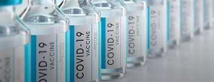

Corona
Killer
CORONA
PROTECTION
the vaccine
About us

what is Vaccination?
Vaccination is a simple, safe, and effective way of protecting people against harmful diseases, before they come into contact with them. It uses your body’s natural defenses to build resistance to specific infections and makes your immune system stronger. Vaccines train your immune system to create antibodies, just as it does when it’s exposed to a disease. However, because vaccines contain only killed or weakened forms of germs like viruses or bacteria, they do not cause the disease or put you at risk of its complications. Most vaccines are given by an injection, but some are given orally (by mouth) or sprayed into the nose....
how does the vaccine work?
Vaccines reduce risks of getting a disease by working with your body’s natural defenses to build protection. When you get a vaccine, your immune system responds. It:
Recognizes the invading germ, such as the virus or bacteria.
Produces antibodies. Antibodies are proteins produced naturally by the immune system to fight disease.
Remembers the disease and how to fight it. If you are then exposed to the germ in the future, your immune system can quickly destroy it before you become unwell.